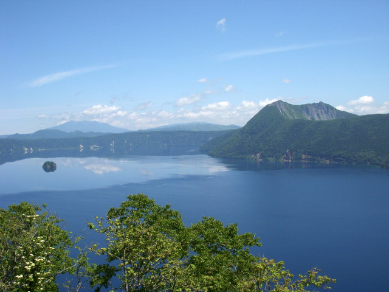
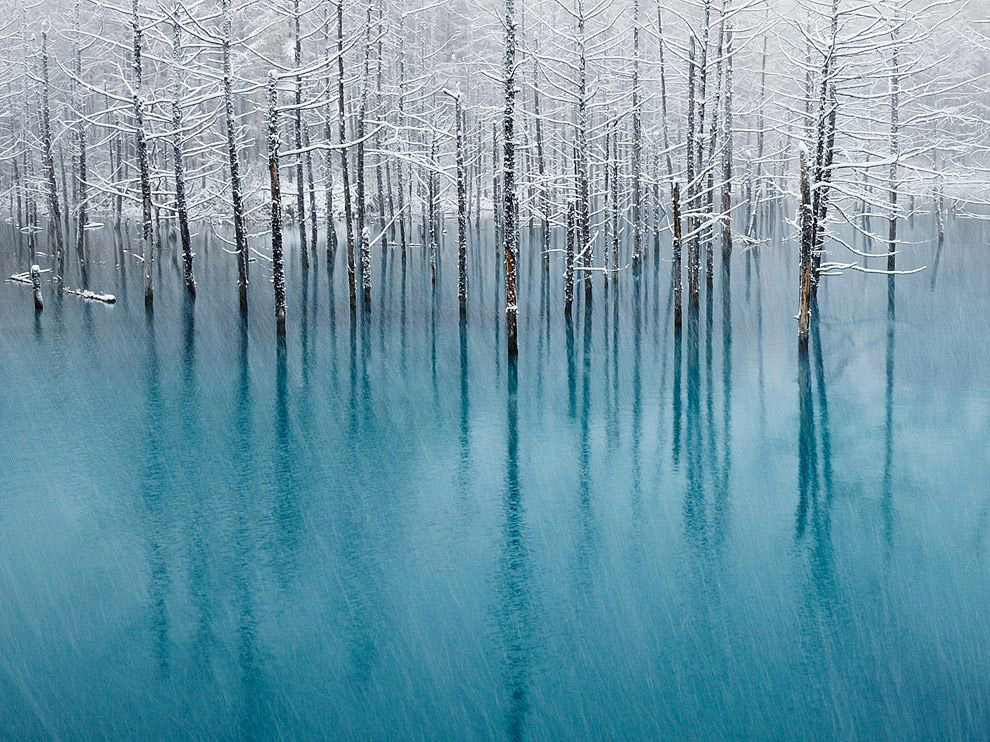
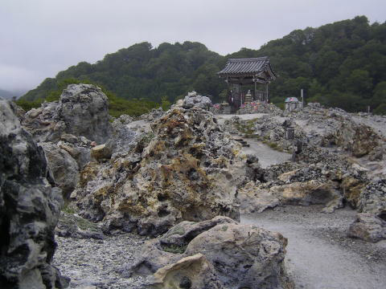
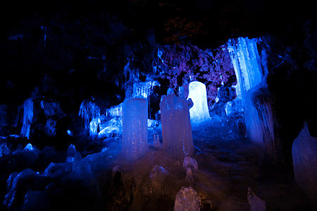
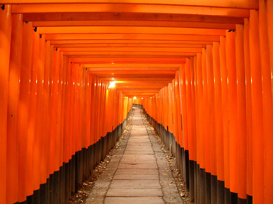
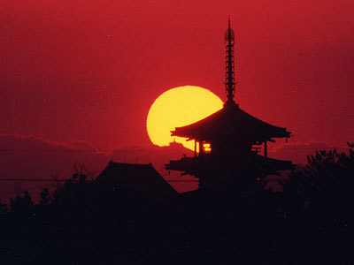
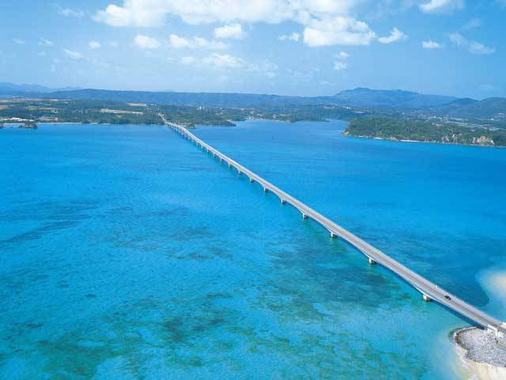

Lake Mashuu
It is located in the eastern Hokkaido. It is said to be the second clearest lake in the world. It reflects blue well because of its clarity and depth, and when it is sunny, people call the colour of the surface of the lake “Mashu Blue.”
A Blue Pond in Biei
This is a pond with an area of about 12,000 square meters, and the depth of the water is about 2.5 to 5 meters. When you see it from the land, the colour of it is turquoise. We do not know how it produces the mysterious colour. Apple Co. has selected this beautiful pond as a wallpaper of MacBook Pro.
Osorezan
There are three sacred mountains in Japan, and this is one of them. It is covered with the smell of sulfur, and its desolate scenery makes us feel as if we were in the world of the dead.
Narusawa Ice Cave
This ice cave was formed in 864 when Mt. Nagao erupted, and it was designated as a protected geologic formation in 1929. It is a lava cave, and it is 153 meters long. It is located in Aokigahara thick forest, and you can see icicles, blocks of ice and a pond which is 21 meters under the ground throughout the year.
Mt. Fuji

Mt. Fuji is the highest mountain in Japan, and it is very popular in the world for its elegant shape. It has been treated as a god for many of us. It has been used as a theme in various art work, so it is indispensable for all of us.
Fusimi Inari Shrine
It is the head Inari shrine of 30,000 Inari shrines in Japan. It is located in Kyoto, and there are many toriis (Archways to a Shinto Shrine), which is called Senbon Torii.
Horyuji Temple
The temple was built in 607 by Prince Shotoku. It is located in Nara prefecture, and it was inscribed as a UNESCO World Heritage Site in 1993. The Japanese government lists several of the structures and sculptures as national Treasures. One of its buildings is the oldest wooden building in the world.
Kori Ohasi Bridge
It is in Okinawa prefecture. It is 1960 meters long and the longest bridge with free of charge in Japan. You can enjoy driving as if you drive on the water. The beautiful scenery of the emerald green ocean is fantastic. You can walk to cross the bridge as you are enjoying sunset.